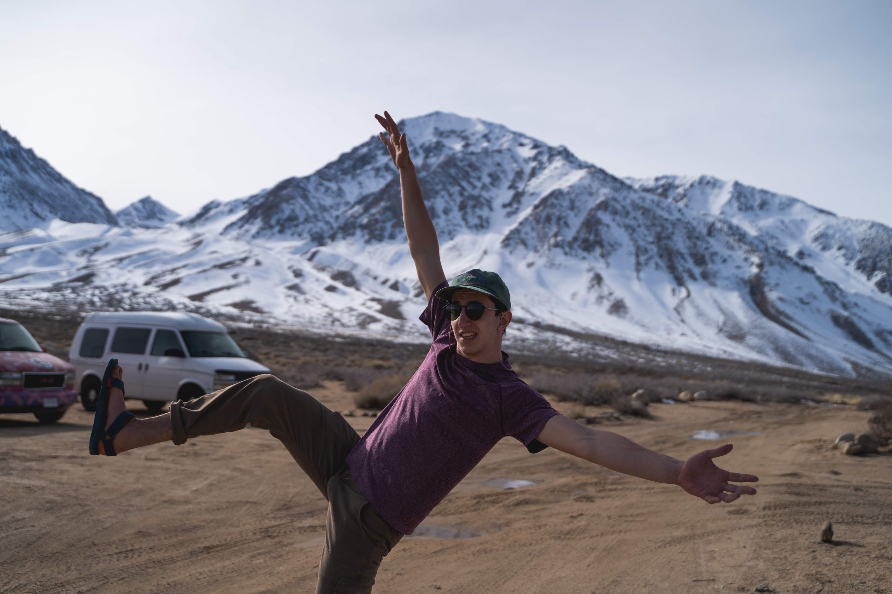

Hi! My name is Jacob Yosowitz, I am an architecture student at the University of Michigan. I grew up in flatland (midwest USA), but my outdoorsy family made effort to venture out to the mountains whenever possible. Influenced by my upbringing, I've grown to become an avid climber, (self-proclaimed) expert snowboarder, amature campfire chef, tree-hugger, and a passionate environmentalist. I wish to spread my love for the outdoors via camera, hopefully influencing people to consider their connection with nature and inspire positive environmental action.
